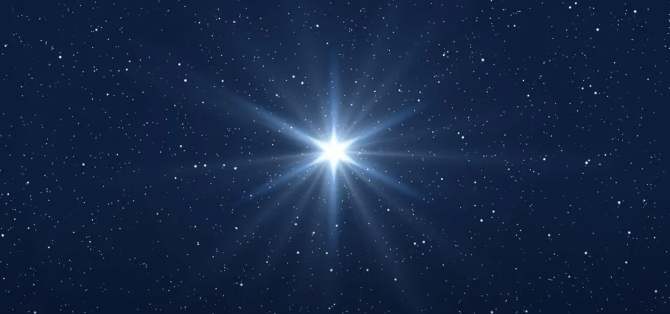
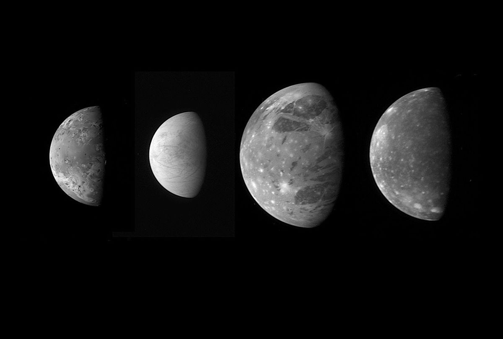

Welcome to Cosmic Quest!
Discover the mysteries of galaxies, planets, and space technologies.

Space is a vast, mysterious expanse beyond Earth, filled with stars and galaxies.
Discover the mysteries of galaxies, planets, and space technologies.
Space is a vast, mysterious expanse beyond Earth, filled with stars and galaxies.
Space is an infinite expanse beyond Earth filled with galaxies, stars, and planets. It holds mysteries like black holes,
cosmic radiation, and distant worlds waiting to be explored. From astronauts venturing beyond our planet
to telescopes uncovering the universe's secrets, space remains humsnity's greatest frontier.
Stars are the joy of night and the magic of the universe, illuminating the night sky and inspiring human wonder for centuries. Born within vast cosmic clouds of gas and dust, stars ignite nuclear reactions that fuel their brilliant light. Some shine for millions of years, while red dwarfs can endure for trillions—outliving the universe as we know it. In ancient myths, stars were celestial guides, shaping destinies and marking the passage of time. Today, advanced telescopes like James Webb unveil starlight that has traveled across the cosmos for billions of years, revealing the secrets of galaxies and cosmic evolution. Stars are more than distant lights—they are keepers of history, storytellers of time, and beacons of endless discovery.
Moons – also called planetary satellites – come in many shapes, sizes and types. They are generally solid bodies, and few have atmospheres. Most planetary moons probably formed out the discs of gas and dust circulating around the planets in the early solar system. Moons orbit planets, and dwarf planets. They also orbit asteroids. As of March 25, 2025, there were more than 891 confirmed moons in our solar system: 421 officially recognized moons orbiting planets, including dwarf planet Pluto. More than 470 confirmed moons orbiting other officially confirmed dwarf planets, asteroids and trans-Neptunian objects (TNOs). TNOs are objects in the solar system that have an orbit beyond Neptune.
How Moons Get Their Names Every moon discovered in the modern era gets a number first. For example, S/2009 S1 was the first satellite discovered at Saturn in 2009. The most significant moons get an official name. Most moons in our solar system are named for mythological characters from a wide variety of cultures. Newer moons discovered at Saturn, for example, are named for Norse mythology such as Bergelmir, a giant. Uranus is the exception. Uranus' moons are named for characters in William Shakespeare's plays with destinations such as Ophelia and Puck in orbit. Other Uranian moon names were chosen from Alexander Pope's poetry (Belinda and Ariel).
Planets are celestial bodies that orbit stars, possessing enough mass to become spherical due to their gravity but not
massive enough to trigger nuclear fusion like stars.
In our solar system, there are eight major planets, divided into rocky inner planets and giant gaseous outer planets.
Pluto was once considered the ninth planet of our solar system, but in 2006, the International Astronomical Union reclassified it as a dwarf planet. This decision was based on new criteria for defining planets, which required an object to clear its orbit of other debris—something Pluto couldn't do due to its location in the Kuiper Belt, a region filled with icy bodies. Although Pluto wasn't physically "ejected" from the solar system, some studies suggest that passing stars could disrupt planetary orbits over billions of years, potentially leading to the ejection of celestial bodies like Pluto. Additionally, astronomers have discovered other distant objects with highly eccentric orbits, possibly indicating past gravitational interactions that altered their paths. Despite its reclassification, Pluto remains a fascinating world with mountains of ice, a thin atmosphere, and a complex history.
housands of exoplanets have been discovered, and some resemble Earth in size and composition, possibly harboring conditions suitable for life.
Others, known as "gas giants," orbit distant stars with extreme atmospheric conditions.
Planets are more than just floating rocks or gas masses in space; they are dynamic entities shaped by cosmic forces, carrying secrets that help us unlock
the mysteries of the universe
Space technology encompasses a wide range of innovations used for exploring and utilizing outer space. It includes spacecraft, satellites, space stations, and advanced propulsion systems. Here’s a deeper look into this fascinating field:
SPUTNIK 1 (1957):The first artificial satellite launched by the Soviet Union, marking the beginning of the space age.
APOLLO 11 (1969):The first manned mission to land on the Moon, with Neil Armstrong and Buzz Aldrin taking historic steps.
VOYAGER 1 & 2 (1977)Interstellar probes that provided invaluable data on Jupiter, Saturn, Uranus, and Neptune, and continue to explore deep space.
HUBBLE SPACE TELESCOPE (1990)A revolutionary space observatory that has captured breathtaking images and expanded our understanding of the universe.
CURIOSITY & PERSEVERANCE (2012 & 2020)Mars rovers designed to explore the planet’s surface, searching for signs of past life and studying its geology.
JAMES WEBB SPACE TELESCOPE (2021)An advanced infrared telescope that allows scientists to study the early universe and distant exoplanets.
ARTEMIS PROGRAM (2020s)NASA’s initiative to return humans to the Moon and establish a sustainable presence for future Mars exploration.
Space is not just an endless expanse filled with stars and planets—it is a vast and enigmatic realm full of unanswered questions and unexplained phenomena. Despite tremendous advancements in astronomy and physics, many aspects of the universe remain shrouded in mystery, leaving scientists and explorers eager to uncover the secrets of the cosmos.
Dark Matter and Dark Energy: The Invisible Forces
When scientists observe the motion of galaxies and the expansion of the universe, they detect the influence of something unseen. These invisible forces, known as dark matter and dark energy, make up about 95% of the universe, yet their true nature remains unknown. If dark matter cannot be directly observed, how do we know it exists? Scientists infer its presence through its gravitational effects, but its exact properties continue to elude us. Unlocking the mysteries of dark matter and dark energy could revolutionize our understanding of the universe.
Black Holes: Cosmic Enigmas
Few phenomena captivate the human imagination like black holes—regions of space where gravity is so intense that nothing, not even light, can escape. While we have captured images of black holes and studied their behavior, questions persist. Do black holes serve as gateways to other dimensions? What happens to matter when it falls into one? Some theories suggest they could be cosmic laboratories where the laws of physics break down, offering insights into the very fabric of reality.
Mysterious Signals from Deep Space
Over the years, astronomers have received strange radio signals from distant parts of the universe. Some of these fast radio bursts (FRBs) come from billions of light-years away and have no clear explanation. Could they be natural cosmic phenomena, such as neutron stars colliding, or could they be signs of extraterrestrial intelligence? While scientists lean toward natural explanations, the possibility of discovering alien civilizations remains an exciting and profound question.
Parallel Universes: Is Our Universe One of Many?
Some theories suggest that our universe is just one of many—a concept known as the multiverse. If true, this would mean infinite variations of existence, each with different laws of physics and alternate versions of reality. Though the idea remains purely theoretical, advancements in quantum physics could one day provide evidence that we are not alone in the grand cosmic structure.
Are We Alone in the Universe?
With billions of stars and potentially habitable planets scattered across the galaxy, the question of extraterrestrial life lingers. Have intelligent beings evolved elsewhere, or is humanity truly unique? Scientists continue searching for signs of life beyond Earth, whether through the study of exoplanets, analysis of extremophiles on Earth, or the detection of biosignatures in distant atmospheres. One day, we may find definitive proof that life exists beyond our own planet.The mysteries of space remind us that, despite all we have discovered, we have only just begun to scratch the surface of understanding the cosmos. As technology advances and exploration continues, the answers to these profound questions may lie ahead, waiting to reshape our knowledge of existence itself.